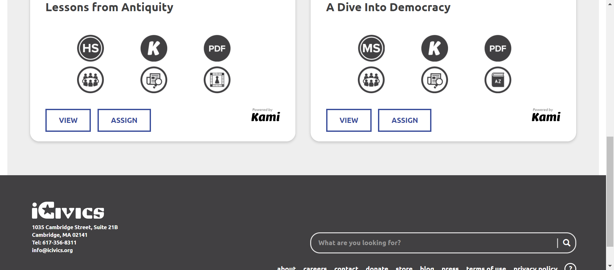

Tests
32 test(s) passed
4 test(s) failed, 0 others
Steps
137 step(s) passed
4 step(s) failed, 0 others
Tests
-
HomepageTeacherHeader Jun 30, 2022 12:54:09 PM passJun 30, 2022 12:54:09 PM Jun 30, 2022 12:55:11 PM 0h 1m 2s+0ms
-
C3 - While on all other pages, do you see buttons for Play, Teach, About, Donate, Shop, and My iCivics in the navigation bar?
Jun 30, 2022 02:40:14 PM 0h 2m 1s+574ms passStatus Timestamp Details check_circle 12:54:46 PM playbutton is display 
check_circle 12:54:46 PM Teachbutton is display 
check_circle 12:54:46 PM aboutbutton is display 
check_circle 12:54:47 PM donatebutton is display 
check_circle 12:54:47 PM Shopbutton is display 
check_circle 12:54:47 PM Signin button Verified successfully 
check_circle 12:55:11 PM Myicivicsbutton is display 
-
-
HomepageTeacherHeader Jun 30, 2022 12:57:00 PM passJun 30, 2022 12:57:00 PM Jun 30, 2022 12:57:54 PM 0h 0m 54s+0ms
-
C3 - While on all other pages, do you see buttons for Play, Teach, About, Donate, Shop, and My iCivics in the navigation bar?
Jun 30, 2022 02:40:14 PM 0h 2m 1s+589ms passStatus Timestamp Details check_circle 12:57:29 PM playbutton is display 
check_circle 12:57:30 PM Teachbutton is display 
check_circle 12:57:30 PM aboutbutton is display 
check_circle 12:57:30 PM donatebutton is display 
check_circle 12:57:30 PM Shopbutton is display 
check_circle 12:57:30 PM Signin button is display 
check_circle 12:57:54 PM Myicivicsbutton is display 
-
-
HomepageTeacherHeader Jun 30, 2022 01:03:19 PM passJun 30, 2022 01:03:19 PM Jun 30, 2022 01:04:16 PM 0h 0m 57s+0ms
-
C3 - While on all other pages, do you see buttons for Play, Teach, About, Donate, Shop, and My iCivics in the navigation bar?for authenticated user
Jun 30, 2022 02:40:14 PM 0h 2m 1s+599ms passStatus Timestamp Details check_circle 1:03:48 PM The Element SIGN IN clicked 
check_circle 1:04:11 PM The Element LOG IN clicked check_circle 1:04:15 PM playbutton is display 
check_circle 1:04:15 PM Teachbutton is display 
check_circle 1:04:15 PM aboutbutton is display 
check_circle 1:04:15 PM Donatebutton is display 
check_circle 1:04:15 PM Shopbutton is display 
check_circle 1:04:16 PM Myicivicsbutton is display
-
-
HomepageHeader Jun 30, 2022 01:19:58 PM passJun 30, 2022 01:19:58 PM Jun 30, 2022 01:20:11 PM 0h 0m 13s+0ms
-
C1538 - Does the donation popup NOT show?
Jun 30, 2022 02:40:14 PM 0h 2m 1s+607ms passStatus Timestamp Details check_circle 1:20:10 PM The Element DONATE clicked check_circle 1:20:11 PM Donation Popup is not present 
-
-
HomepageHeaderplay Jun 30, 2022 01:27:00 PM passJun 30, 2022 01:27:00 PM Jun 30, 2022 01:27:35 PM 0h 0m 35s+0ms
-
C9- Do you see links to All Games, as well as each individual game in the submenu?
Jun 30, 2022 02:40:14 PM 0h 2m 1s+612ms passStatus Timestamp Details check_circle 1:27:30 PM playbutton submenu is display check_circle 1:27:30 PM playbutton submenu count is 17 
check_circle 1:27:31 PM Playbutton submenu is ALL GAMES 
check_circle 1:27:31 PM Playbutton submenu is ARGUMENT WARS 
check_circle 1:27:31 PM Playbutton submenu is BRANCHES OF POWER 
check_circle 1:27:31 PM Playbutton submenu is CAST YOUR VOTE 
check_circle 1:27:32 PM Playbutton submenu is CONVENE THE COUNCIL 
check_circle 1:27:32 PM Playbutton submenu is COUNTIES WORK 
check_circle 1:27:32 PM Playbutton submenu is COUNTIES WORK: TEXAS 
check_circle 1:27:32 PM Playbutton submenu is COURT QUEST 
check_circle 1:27:33 PM Playbutton submenu is DO I HAVE A RIGHT? 
check_circle 1:27:33 PM Playbutton submenu is EXECUTIVE COMMAND 
check_circle 1:27:33 PM Playbutton submenu is GAME ODYSSEY 
check_circle 1:27:33 PM Playbutton submenu is IMMIGRATION NATION 
check_circle 1:27:34 PM Playbutton submenu is LAWCRAFT 
check_circle 1:27:34 PM Playbutton submenu is NEWSFEED DEFENDERS 
check_circle 1:27:34 PM Playbutton submenu is RACE TO RATIFY 
check_circle 1:27:34 PM Playbutton submenu is SORTIFY: U.S. CITIZENSHIP 
check_circle 1:27:35 PM Playbutton submenu is WIN THE WHITE HOUSE 
-
-
HomepageHeaderteach Jun 30, 2022 01:38:54 PM passJun 30, 2022 01:38:54 PM Jun 30, 2022 01:39:03 PM 0h 0m 9s+0ms
-
C15 - When you select Teach, does a submenu open below the Teach button?
Jun 30, 2022 02:40:14 PM 0h 2m 1s+625ms passStatus Timestamp Details check_circle 1:39:03 PM Teachsubmenu is display 
-
-
HomepageHeaderteach Jun 30, 2022 01:40:31 PM passJun 30, 2022 01:40:31 PM Jun 30, 2022 01:40:40 PM 0h 0m 9s+0ms
-
C20 - When you select Teach again while the submenu is open, does the submenu close?
Jun 30, 2022 02:40:14 PM 0h 2m 1s+631ms passStatus Timestamp Details check_circle 1:40:39 PM Teachsubmenu is display 
check_circle 1:40:40 PM The Element teach clicked 
check_circle 1:40:40 PM Teach submenu is close on clicking again 
-
-
HomepageHeaderAbout Jun 30, 2022 01:46:10 PM passJun 30, 2022 01:46:10 PM Jun 30, 2022 01:46:44 PM 0h 0m 34s+0ms
-
C22 - When you select About, does a submenu open below the About button?
Jun 30, 2022 02:40:14 PM 0h 2m 1s+635ms passStatus Timestamp Details check_circle 1:46:19 PM Aboutsubmenu display successfully 
check_circle 1:46:41 PM The Element clicked 
check_circle 1:46:44 PM For Homepage aboutbutton is not present 
-
-
HomepageHeaderAbout Jun 30, 2022 02:08:30 PM passJun 30, 2022 02:08:30 PM Jun 30, 2022 02:08:41 PM 0h 0m 11s+0ms
-
C27 - When you select About again while the submenu is open, does the submenu close?
Jun 30, 2022 02:40:14 PM 0h 2m 1s+640ms passStatus Timestamp Details check_circle 2:08:40 PM Aboutsubmenu is display 
check_circle 2:08:41 PM The Element about clicked 
check_circle 2:08:41 PM About button is clicked again and about menu is close
-
-
HomepageHeadermysigninmisc Jun 30, 2022 02:13:54 PM passJun 30, 2022 02:13:54 PM Jun 30, 2022 02:14:06 PM 0h 0m 12s+0ms
-
C42 - When you select Sign In / My iCivics again while the submenu is open, does the submenu close?
Jun 30, 2022 02:40:14 PM 0h 2m 1s+646ms passStatus Timestamp Details check_circle 2:14:05 PM Signinbutton is displayed 
check_circle 2:14:06 PM The Element SIGN IN clicked 
check_circle 2:14:06 PM signin submenu is close after clicking again 
-
-
HomepageHeaderMyIcivicsMisc Jun 30, 2022 02:21:47 PM failJun 30, 2022 02:21:47 PM Jun 30, 2022 02:32:02 PM 0h 10m 15s+0ms
-
C29 - Can you see an appropriate icon for Donate?
Jun 30, 2022 02:40:14 PM 0h 2m 1s+655ms passStatus Timestamp Details check_circle 2:22:23 PM Donatebutton is displayed 
-
C30 - When you select Donate, are you directed to https://give.icivics.org/?
Jun 30, 2022 02:40:14 PM 0h 2m 1s+656ms passStatus Timestamp Details check_circle 2:22:53 PM Donatebutton is clicked 
check_circle 2:23:01 PM 'Donatebutton is clicked'redirect to corresponding pagehttps://give.icivics.org/q7Mcn0NUdUylSaBbpfwl4w2?_ga=2.161306489.575082774.1656579151-1417059314.1656579150 
-
C31 - Can you see an appropriate icon for Shop?
Jun 30, 2022 02:40:14 PM 0h 2m 1s+658ms failStatus Timestamp Details cancel 2:24:01 PM The Element with locator:XPATH&(//a[@title='Shop iCivics.'])[2] Not Found with value: (//a[@title='Shop iCivics.'])[2] -
C32 - When you select Shop, are you directed to https://icivics.myshopify.com/?
Jun 30, 2022 02:40:14 PM 0h 2m 1s+659ms failStatus Timestamp Details check_circle 2:24:30 PM Shopbutton is clicked 
cancel 2:25:01 PM The Element with locator:XPATH&(//a[@title='Shop iCivics.'])[2] Not Found with value: (//a[@title='Shop iCivics.'])[2] 
-
C34 - If you are signed in, do you see a My iCivics button instead of Sign In?
Jun 30, 2022 02:40:14 PM 0h 2m 1s+663ms passStatus Timestamp Details check_circle 2:25:30 PM Myicivicsbutton is display after login instead of signin button 
-
C35 - Can you see your avatar icon represented in the button?
Jun 30, 2022 02:40:14 PM 0h 2m 1s+664ms passStatus Timestamp Details check_circle 2:26:04 PM Avatar image is displayed on the button 
-
C35 - Can you see your avatar icon represented in the button?
Jun 30, 2022 02:40:14 PM 0h 2m 1s+665ms passStatus Timestamp Details check_circle 2:26:34 PM My iCivics button has sillouette avatar -
C36 - When you select Sign In/My iCivics, does a submenu open below the button?
Jun 30, 2022 02:40:14 PM 0h 2m 1s+666ms passStatus Timestamp Details check_circle 2:27:04 PM myicivics button is clicked and submenu is display 
-
C37 - When you select Sign In, do you see links to Sign In, Register As a Student, Register As A Teacher in the submenu?
Jun 30, 2022 02:40:14 PM 0h 2m 1s+667ms passStatus Timestamp Details check_circle 2:27:33 PM myicivics button is clicked and submenu is display 
check_circle 2:27:33 PM myicivics submenu count is 3 
check_circle 2:27:34 PM myicivcs submenu is MY ICIVICS 
check_circle 2:27:34 PM myicivcs submenu is MY CLASSES 
check_circle 2:27:34 PM myicivcs submenu is MY FAVORITES 
-
C39 -When you select a link in the submenu, are you navigated to the appropriate page?
Jun 30, 2022 02:40:14 PM 0h 2m 1s+669ms passStatus Timestamp Details check_circle 2:28:11 PM The mouse over by xpath : (//a[@title='MY ICIVICS'])[2] is performed. 
check_circle 2:28:12 PM The element [[ChromeDriver: chrome on WINDOWS (a8cae824b1c9b097eaf5272e1c7df3c3)] -> xpath: (//a[@title='My iCivics'])[2]] is visible 
check_circle 2:28:12 PM The expected text contains the actual MY ICIVICS 
check_circle 2:28:30 PM The Element MY ICIVICS clicked 
check_circle 2:28:30 PM The expected https://staging.d9.icivics.org/user/9306834 url as same as the https://staging.d9.icivics.org/user/9306834 actual url. 
check_circle 2:28:30 PM The expected text contains the actual Welcome back, 
check_circle 2:28:31 PM The mouse over by xpath : (//a[@title='MY ICIVICS'])[2] is performed. 
check_circle 2:28:31 PM The element [[ChromeDriver: chrome on WINDOWS (a8cae824b1c9b097eaf5272e1c7df3c3)] -> xpath: (//a[@title='My Classes'])[2]] is visible 
check_circle 2:28:31 PM The expected text contains the actual MY CLASSES 
check_circle 2:28:39 PM The Element MY CLASSES clicked 
check_circle 2:28:39 PM The expected https://staging.d9.icivics.org/classes url as same as the https://staging.d9.icivics.org/classes actual url. check_circle 2:28:40 PM The expected text contains the actual SYNC CLASSROOM CLASSES check_circle 2:28:40 PM The mouse over by xpath : (//a[@title='MY ICIVICS'])[2] is performed. check_circle 2:28:40 PM The element [[ChromeDriver: chrome on WINDOWS (a8cae824b1c9b097eaf5272e1c7df3c3)] -> xpath: (//a[@title='My Favorites'])[2]] is visible 
check_circle 2:28:41 PM The expected text contains the actual MY FAVORITES 
check_circle 2:28:55 PM The Element MY FAVORITES clicked 
check_circle 2:28:55 PM The expected https://staging.d9.icivics.org/favorites url as same as the https://staging.d9.icivics.org/favorites actual url. 
check_circle 2:28:55 PM The expected text contains the actual Lessons from Antiquity 
-
C41 -If you are viewing one of the pages in the Sign In/My iCivics submenu, is that page underlined in the submenu?
Jun 30, 2022 02:40:14 PM 0h 2m 1s+679ms failStatus Timestamp Details check_circle 2:29:25 PM myicivics button is clicked and submenu is display 
check_circle 2:29:59 PM Selected page is underlined 
cancel 2:30:32 PM Selected page is not underlined 
check_circle 2:31:05 PM Selected page is underlined 
check_circle 2:31:05 PM The Element MY ICIVICS clicked 
check_circle 2:31:05 PM Myicivics submenu is close on clicking again 
-
C42 - When you select Sign In / My iCivics again while the submenu is open, does the submenu close?
Jun 30, 2022 02:40:14 PM 0h 2m 1s+680ms passStatus Timestamp Details check_circle 2:32:02 PM The Element MY ICIVICS clicked 
check_circle 2:32:02 PM Myicivics submenu is close on clicking again 
-
-
HomepageHeaderMyIcivicsMisc Jun 30, 2022 02:36:50 PM passJun 30, 2022 02:36:50 PM Jun 30, 2022 02:37:26 PM 0h 0m 36s+0ms
-
C31 - Can you see an appropriate icon for Shop?
Jun 30, 2022 02:40:14 PM 0h 2m 1s+690ms passStatus Timestamp Details check_circle 2:37:26 PM Shopbutton is displayed 
-
-
HomepageHeaderMyIcivicsMisc Jun 30, 2022 02:38:13 PM passJun 30, 2022 02:38:13 PM Jun 30, 2022 02:38:51 PM 0h 0m 38s+0ms
-
C32 - When you select Shop, are you directed to https://icivics.myshopify.com/?
Jun 30, 2022 02:40:14 PM 0h 1m 23s+697ms passStatus Timestamp Details check_circle 2:38:47 PM Shopbutton is clicked 
check_circle 2:38:51 PM 'Shopbutton is clicked'redirect to corresponding pagehttps://icivics.myshopify.com/ 
-
-
HomepageHeaderMyIcivicsMisc Jun 30, 2022 02:40:14 PM failJun 30, 2022 02:40:14 PM Jun 30, 2022 02:49:16 PM 0h 9m 1s+411ms
-
C29 - Can you see an appropriate icon for Donate?
Jun 30, 2022 02:40:48 PM 0h 0m 29s+25ms passStatus Timestamp Details check_circle 2:40:48 PM Donatebutton is displayed 
-
C30 - When you select Donate, are you directed to https://give.icivics.org/?
Jun 30, 2022 02:41:27 PM 0h 0m 35s+208ms passStatus Timestamp Details check_circle 2:41:19 PM Donatebutton is clicked 
check_circle 2:41:27 PM 'Donatebutton is clicked'redirect to corresponding pagehttps://give.icivics.org/q7Mcn0NUdUylSaBbpfwl4w2?_ga=2.97108827.512744986.1656580257-222566675.1656580256 
-
C31 - Can you see an appropriate icon for Shop?
Jun 30, 2022 02:41:58 PM 0h 0m 28s+618ms passStatus Timestamp Details check_circle 2:41:58 PM Shopbutton is displayed 
-
C32 - When you select Shop, are you directed to https://icivics.myshopify.com/?
Jun 30, 2022 02:42:31 PM 0h 0m 30s+974ms passStatus Timestamp Details check_circle 2:42:27 PM Shopbutton is clicked 
check_circle 2:42:31 PM 'Shopbutton is clicked'redirect to corresponding pagehttps://icivics.myshopify.com/ 
-
C34 - If you are signed in, do you see a My iCivics button instead of Sign In?
Jun 30, 2022 02:43:02 PM 0h 0m 28s+235ms passStatus Timestamp Details check_circle 2:43:02 PM Myicivicsbutton is display after login instead of signin button 
-
C35 - Can you see your avatar icon represented in the button?
Jun 30, 2022 02:43:36 PM 0h 0m 32s+737ms passStatus Timestamp Details check_circle 2:43:36 PM Avatar image is displayed on the button 
-
C35 - Can you see your avatar icon represented in the button?
Jun 30, 2022 02:44:09 PM 0h 0m 29s+619ms passStatus Timestamp Details check_circle 2:44:09 PM My iCivics button has sillouette avatar 
-
C36 - When you select Sign In/My iCivics, does a submenu open below the button?
Jun 30, 2022 02:44:39 PM 0h 0m 27s+614ms passStatus Timestamp Details check_circle 2:44:39 PM myicivics button is clicked and submenu is display 
-
C37 - When you select Sign In, do you see links to Sign In, Register As a Student, Register As A Teacher in the submenu?
Jun 30, 2022 02:45:11 PM 0h 0m 30s+180ms passStatus Timestamp Details check_circle 2:45:10 PM myicivics button is clicked and submenu is display 
check_circle 2:45:10 PM myicivics submenu count is 3 
check_circle 2:45:11 PM myicivcs submenu is MY ICIVICS 
check_circle 2:45:11 PM myicivcs submenu is MY CLASSES 
check_circle 2:45:11 PM myicivcs submenu is MY FAVORITES 
-
C39 -When you select a link in the submenu, are you navigated to the appropriate page?
Jun 30, 2022 02:46:32 PM 0h 1m 18s+518ms passStatus Timestamp Details check_circle 2:45:47 PM The mouse over by xpath : (//a[@title='MY ICIVICS'])[2] is performed. 
check_circle 2:45:47 PM The element [[ChromeDriver: chrome on WINDOWS (1583e89e9dfcfba700f2e80132ff0537)] -> xpath: (//a[@title='My iCivics'])[2]] is visible 
check_circle 2:45:48 PM The expected text contains the actual MY ICIVICS 
check_circle 2:46:05 PM The Element MY ICIVICS clicked 
check_circle 2:46:06 PM The expected https://staging.d9.icivics.org/user/9306834 url as same as the https://staging.d9.icivics.org/user/9306834 actual url. 
check_circle 2:46:06 PM The expected text contains the actual Welcome back, 
check_circle 2:46:07 PM The mouse over by xpath : (//a[@title='MY ICIVICS'])[2] is performed. 
check_circle 2:46:07 PM The element [[ChromeDriver: chrome on WINDOWS (1583e89e9dfcfba700f2e80132ff0537)] -> xpath: (//a[@title='My Classes'])[2]] is visible 
check_circle 2:46:07 PM The expected text contains the actual MY CLASSES 
check_circle 2:46:14 PM The Element MY CLASSES clicked 
check_circle 2:46:14 PM The expected https://staging.d9.icivics.org/classes url as same as the https://staging.d9.icivics.org/classes actual url. 
check_circle 2:46:15 PM The expected text contains the actual SYNC CLASSROOM CLASSES 
check_circle 2:46:15 PM The mouse over by xpath : (//a[@title='MY ICIVICS'])[2] is performed. 
check_circle 2:46:16 PM The element [[ChromeDriver: chrome on WINDOWS (1583e89e9dfcfba700f2e80132ff0537)] -> xpath: (//a[@title='My Favorites'])[2]] is visible 
check_circle 2:46:16 PM The expected text contains the actual MY FAVORITES 
check_circle 2:46:31 PM The Element MY FAVORITES clicked 
check_circle 2:46:31 PM The expected https://staging.d9.icivics.org/favorites url as same as the https://staging.d9.icivics.org/favorites actual url. 
check_circle 2:46:32 PM The expected text contains the actual Lessons from Antiquity -
C41 -If you are viewing one of the pages in the Sign In/My iCivics submenu, is that page underlined in the submenu?
Jun 30, 2022 02:48:42 PM 0h 2m 7s+910ms failStatus Timestamp Details check_circle 2:47:02 PM myicivics button is clicked and submenu is display 
check_circle 2:47:36 PM Selected page is underlined cancel 2:48:09 PM Selected page is not underlined 
check_circle 2:48:42 PM Selected page is underlined 
check_circle 2:48:42 PM The Element MY ICIVICS clicked 
check_circle 2:48:42 PM Myicivics submenu is close on clicking again 
-
C42 - When you select Sign In / My iCivics again while the submenu is open, does the submenu close?
Jun 30, 2022 02:49:16 PM 0h 0m 31s+67ms passStatus Timestamp Details check_circle 2:49:15 PM The Element MY ICIVICS clicked 
check_circle 2:49:16 PM Myicivics submenu is close on clicking again 
-
info_outline
check_circle
cancel
cancel
error
warning
redo
clear
Dashboard
Tests
36
Steps
141
Start
Jun 30, 2022 02:40:14 PM
End
Jun 30, 2022 02:49:16 PM
Time Taken
0h 9m 2s+806ms